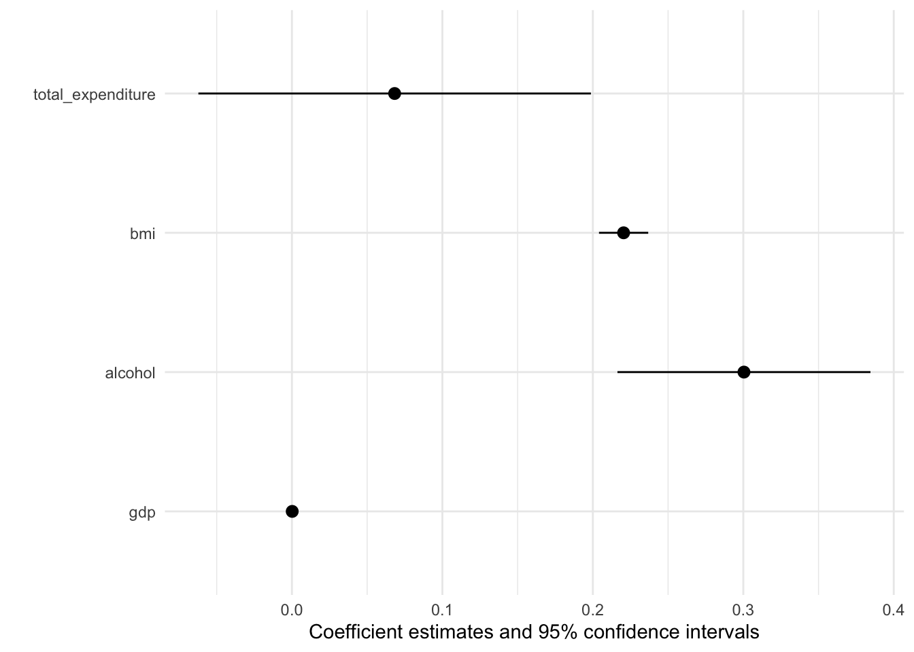
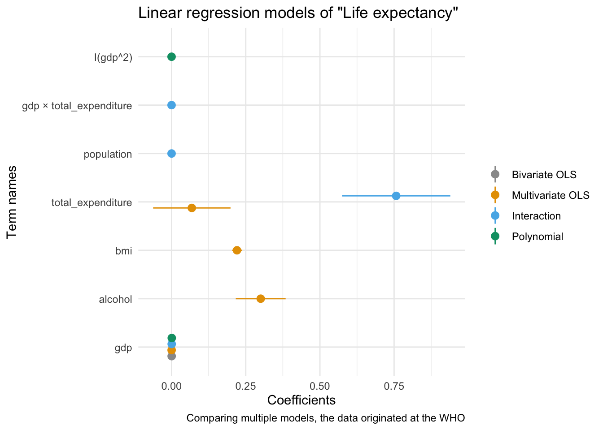

Modelling
Reporting, summarising and communicating models in R
Welcome back! I hope you all enjoyed the course-free Midterm Week! 🏖
Last week we talked a bit about how you might scrape innovative data from the web. Collecting data is not an end in itself, rather you do it to be able to run models that explore, infer or predict outcomes. We won’t focus on the statistical considerations that inform your model choice, instead we will show you how to:
- use formulas to specify multiple models
- processing (estimation) model results with
broom - summarise outputs with
modelsummary - communicate results through plots and tables
The Model Workflow with R
While the last session dealt with one of the sexier areas of Data Science (Web Scraping), today we will go back to the bread and butter 🍞 of any self-respecting data scientist - modelling!
But if we are not even talking about ML, DL or model choice, why bother? Well, as with most things it is worth to revisit fundamentals from time to time. By investing just a little more effort here, we can create much better reports and papers!
In general, remember, your basic workflow for evaluating and reporting models is the following:

Today we will mostly deal with the model and communicate steps in the graph.
Setup
Before we get started with the actual coding we need to load a few packages and get some data. We are using this WHO dataset on life expectancy.
pacman::p_load(kableExtra, tidyverse, broom, modelsummary, estimatr, janitor, modelr)FALSE
FALSE The downloaded binary packages are in
FALSE /var/folders/8f/xylxd9gd5b947_66cv0w9m1h0000gp/T//RtmpecOdHH/downloaded_packages
FALSE
FALSE The downloaded binary packages are in
FALSE /var/folders/8f/xylxd9gd5b947_66cv0w9m1h0000gp/T//RtmpecOdHH/downloaded_packageslife_expec_dat <- read_csv("life_expectancy.csv") %>% clean_names()
head(life_expec_dat)Using Formulae in R
R as coding language was specifically designed with statistical analysis in mind. Therefore the founding fathers of R 🙌 - in their infinite wisdom - decided to create a special object class (called formula) to help us run models.
Syntax
A quick recap on the syntax that you can use within formulae. The ~ sign generally differentiates between dependent and independent variables. The + sign is used to distinguish between independent variables. Here are a few other lines that are nice to know:
y ~ x1 + x2 # standard formula
y ~ . # include all other columns in data as x vars
y ~ x1 * x2 # Interaction terms
y ~ x + I(x^2) # higher order termsFormulae are very straightforward to work with. To avoid any errors you should follow the following two steps.
Step 1: create a string containing the written formula. The paste function from last week is useful for this.
formula_string <- paste("life_expectancy", "~ gdp")Step 2: transform the string into R class formula. Only then can you plug it into the model function.
form <- as.formula(formula_string) # needs to be transformed to correct classHere is the proof that both ways of doing it are identical.
form <- lm(form, data = life_expec_dat)
reg <- lm(life_expectancy ~ gdp, data = life_expec_dat)
form$coefficients == reg$coefficients## (Intercept) gdp
## TRUE TRUEFor Iteration
We encourage you to fit many models, ranging from simple to complex, and formulae can help you in the iteration process.
Often, the modelling process requires you to run the same specification with multiple configurations of both dependent and independent variables. Model formulae make running many similar models super easy:
Step 1: You define a function that let’s you plug in different variables at x or y. These functions take the y or x variable(s) as a string and return a model object.
# iterate over different y variables.
lm_fun_iter_y <- function(dep_var) {
lm( as.formula(paste(dep_var, "~ gdp")), data = life_expec_dat)
}
# iterate over different x variables.
lm_fun_iter_x <- function(indep_var) {
lm( as.formula(paste("life_expectancy ~", paste(indep_var, collapse = "+"))), data = life_expec_dat)
}Notice: It is unlikely you will run just a simple bivariate regression (i.e. your model will include many independent variables). Therefore, we need to use a nested paste function that combines (collapse()) the input character vector with +.
Step 2: You use map() (cf. lab-session 4 to iterate the model over a vector or list of input variables:
# create vector of variables to iterate over
vars <- life_expec_dat %>%
select(-c("life_expectancy", "country")) %>%
names()
# run a bivariate model for each column
biv_model_out <- vars %>%
map(lm_fun_iter_x)This returns a list of all the models that your ran. Given that there are a quite a few models now, so it might be an idea to retain the names of the variables that you feed into your model. You can do this with purrr::set_names().
# run a bivariate model for each column
biv_model_out_w_names <- vars %>%
set_names() %>%
map(lm_fun_iter_x)What if you want to run several different multivariate models? In addition to the code from the lectures you could use modelR::formulas:
# create list of combinations of vars
indep_vars_combos <- modelr::formulas(~life_expectancy,
"Bivariate OLS" = ~ gdp,
"Multivariate OLS" = ~ gdp + alcohol + bmi + total_expenditure,
"Interaction" = ~ population + gdp * total_expenditure,
"Polynomial" = ~ gdp + I(gdp^2))
multiv_model_out <- indep_vars_combos %>% map(lm, data = life_expec_dat)As you can see the function in the lecture is a lot more powerful, but in my admittedly very modest experience, the preceding code resembles the actual scientific workflow more closely.
Model Output with broom
By inspecting either of these model lists, you can see how unwieldy they can be. In the lecture Simon pointed out that we are interested in three main aspects of out model outputs:
- Estimated coefficients and associated standard errors, T-statistics, p-values, confidence intervals
- Model summaries, including goodness of fit measures, information on model convergence, number of observations used
- Observation-level information that arises from the estimated model, such as fitted/predicted values, residuals, estimates of influence
Extracting this information from the vanilla model output is possible, but hardly ideal:
str(multiv_model_out[[3]])## List of 13
## $ coefficients : Named num [1:5] 61.927179692098 0.000000000642 0.000465810506 0.757103785746 -0.000020625313
## ..- attr(*, "names")= chr [1:5] "(Intercept)" "population" "gdp" "total_expenditure" ...
## $ residuals : Named num [1:2120] -3.3 -8.4 -8.39 -9.07 -8.71 ...
## ..- attr(*, "names")= chr [1:2120] "1" "2" "3" "4" ...
## $ effects : Named num [1:2120] -3158.9 -10.1 212.1 -58.4 -39.1 ...
## ..- attr(*, "names")= chr [1:2120] "(Intercept)" "population" "gdp" "total_expenditure" ...
## $ rank : int 5
## $ fitted.values: Named num [1:2120] 68.3 68.3 68.3 68.6 67.9 ...
## ..- attr(*, "names")= chr [1:2120] "1" "2" "3" "4" ...
....Tidying Model Ojects
Luckily we don’t have to deal with this. We use a package called broom that is part of the tidyverse and more precisely tidymodels. The latter offers a lot of cool packages that have their own tutorials, so check them out! 💪.
We will only focus on broom. As a reminder, here are the three key broom functions that you need to learn:
tidy(): Summarizes information about model components.
broom::tidy(multiv_model_out[[3]], conf.int = TRUE, conf.level = 0.95)glance(): Reports information about the entire model.
broom::glance(multiv_model_out[[3]])augment(): Adds information about observations to a dataset.
augment(multiv_model_out[[3]], se_fit = TRUE) %>% head(3)I mean, doesn’t this look a lot more accessible?
Broom with Many Models
Where broom really shines, is in dealing with many models like we have in our multiv_model_out. It allows us to easily move away from the generally painful-to-deal-with lists and create yet retain each of the three important model returns. Since our example replicates several variables in different models, I include the .id argument in map. It adds a column to our tibble with an model identifier. In our case this identifier consists of the names of the elements in the list.
multiv_model_out_broom <- map_dfr(multiv_model_out, broom::tidy, .id = "model_type")
multiv_model_out_broom %>% head()Now that we have our multiple model outputs in a format that we can work with normally, it is time to start thinking about visualizing our results. You can plot the residuals, the goodness of fit statistics etc. Similarly you could also use the glance() to provide some robustness statistics or descriptive tables.
What we will be focusing on in the next section is how to present your results!
Modelling Results with modelsummary
For this we will use the excellent modelsummary package by Vincent Arel-Bundock’s. Though there are many other options to choose from, we highly recommend you give it a shot!
One reason that we like this package, is that it combines both ways of presenting model results, in a table or in a coefficient plot. As we saw in the lecture each method has its advantages and its drawbacks. Therefore, we will cover both here.
Using Regression Tables
The workhorse function in modelsummary is unsurprisingly modelsummary(). 🤔
Here we only need to input the models list as, the function already takes care of the tidying for us.
modelsummary(multiv_model_out, output = "kableExtra")| Bivariate OLS | Multivariate OLS | Interaction | Polynomial | |
|---|---|---|---|---|
| (Intercept) | 67.035 | 57.729 | 61.927 | 65.878 |
| (0.194) | (0.460) | (0.586) | (0.202) | |
| gdp | 0.000 | 0.000 | 0.000 | 0.001 |
| (0.000) | (0.000) | (0.000) | (0.000) | |
| alcohol | 0.300 | |||
| (0.043) | ||||
| bmi | 0.220 | |||
| (0.008) | ||||
| total_expenditure | 0.068 | 0.757 | ||
| (0.067) | (0.093) | |||
| population | 0.000 | |||
| (0.000) | ||||
| gdp × total_expenditure | 0.000 | |||
| (0.000) | ||||
| I(gdp^2) | 0.000 | |||
| (0.000) | ||||
| Num.Obs. | 2485 | 2308 | 2120 | 2485 |
| R2 | 0.213 | 0.441 | 0.242 | 0.276 |
| R2 Adj. | 0.213 | 0.440 | 0.241 | 0.276 |
| AIC | 17726.8 | 15706.7 | 15149.2 | 17519.7 |
| BIC | 17744.2 | 15741.1 | 15183.2 | 17542.9 |
| Log.Lik. | −8860.382 | −7847.329 | −7568.612 | −8755.827 |
| F | 671.782 | 454.175 | 168.870 | 474.181 |
It looks pretty solid already, but unfortunately it is not yet good enough.
Set acceptable number of digits:
modelsummary(multiv_model_out,
output = "kableExtra",
fmt = "%.2f") # 2-digits and trailing 0And let us also report only the C.I. and get rid of the p-values and the Intercept term:
model_table <- modelsummary(multiv_model_out,
output = "kableExtra",
fmt = "%.2f", # 2-digits and trailing 0
estimate = "{estimate}",
statistic = "conf.int",
coef_omit = "Intercept") Would it not also look more professional if we had our coefficients begin with capital letter? And how about we get rid of some of the bloated goodness of fit statistics?
mod_table <- modelsummary(multiv_model_out,
output = "default",
fmt = "%.2f", # 2-digits and trailing 0
estimate = "{estimate}",
statistic = "conf.int",
coef_omit = "Intercept",
coef_rename=c("gdp"="Gdp", "bmi"="Avg. BMI", "alcohol" = "Alcohol Consum.","population"= "Pop.",
"gdp:total_expenditure" = "Gdp * Health Expenditure (total)",
"total_expenditure"="Health Expenditure (total)", "I(gdp^2)" ="Gdp²"),
gof_omit = 'DF|Deviance|Log.Lik|AIC|BIC',
title = 'A Most Beautiful Regression Table')When using the kableExtra package you can even post-process your table:
mod_table %>%
kable_styling(bootstrap_options = c("striped", "hover", "condensed", "responsive"), full_width = F, fixed_thead = T) %>%
row_spec(3, color = 'red') %>%
row_spec(5, background = 'lightblue')| Bivariate OLS | Multivariate OLS | Interaction | Polynomial | |
|---|---|---|---|---|
| Gdp | 0.00 | 0.00 | 0.00 | 0.00 |
| [0.00, 0.00] | [0.00, 0.00] | [0.00, 0.00] | [0.00, 0.00] | |
| Alcohol Consum. | 0.30 | |||
| [0.22, 0.38] | ||||
| Avg. BMI | 0.22 | |||
| [0.20, 0.24] | ||||
| Health Expenditure (total) | 0.07 | 0.76 | ||
| [−0.06, 0.20] | [0.57, 0.94] | |||
| Pop. | 0.00 | |||
| [−0.00, 0.00] | ||||
| Gdp * Health Expenditure (total) | −0.00 | |||
| [−0.00, −0.00] | ||||
| Gdp² | −0.00 | |||
| [−0.00, −0.00] | ||||
| Num.Obs. | 2485 | 2308 | 2120 | 2485 |
| R2 | 0.213 | 0.441 | 0.242 | 0.276 |
| R2 Adj. | 0.213 | 0.440 | 0.241 | 0.276 |
| F | 671.782 | 454.175 | 168.870 | 474.181 |
Using Plots
If you are after an alternative way to present your results, you might also consider a nice coefficient plot 🎨
Again modelsummary provides a very accessible function to do so: modelplot(). As with the regression table you input the Model List and not the tidied output. This already happens under the hood.
modelplot(multiv_model_out[[2]], coef_omit = 'Interc' )
The default output is already pretty good, but how can we improve on it? More importantly can we create a coefficient plot that displays all our models?
modelplot(multiv_model_out, coef_omit = 'Interc')
Now we only need to customise the plot to our liking:
# The palette with grey:
cbPalette <- c("#999999", "#E69F00", "#56B4E9", "#009E73", "#F0E442", "#0072B2", "#D55E00", "#CC79A7")
# Or you might use any other Paletter inherent to R
modelplot(multiv_model_out, coef_omit = "Intercept") +
labs(x = 'Coefficients',
y = 'Term names',
title = 'Linear regression models of "Life expectancy"',
caption = "Comparing multiple models, the data originated at the WHO") +
scale_color_manual(values = cbPalette)
We will cover the visualisation aspect in R in much greater detail in the coming session, so hopefuly the section on coefficient plot will become clearer then!
Appendix 1: Tools to Prepare the Workshop
Appenidx 2: Further Resources
Modelling Packages
Visualisation tools
A work by Lisa Oswald & Tom Arend
Prepared for Intro to Data Science, taught by Simon Munzert